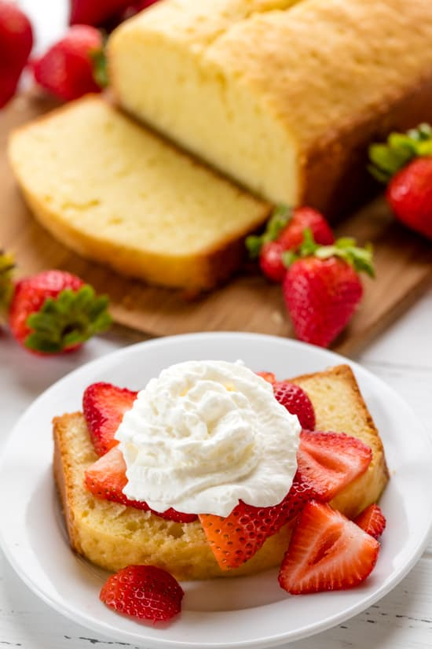

Pound Cake

Desctiption
Pound cake gets its name from the weight of each of the ingredients needed to make the cake. Pound cake requires exactly one pound each of flour, sugar, butter, and eggs.
The recipe for pound cake was included in the very first American cookbook, American Cookery, published in 1796. Despite these early American origins, it’s thought that pound cake migrated from Northern Europe. The French lay claim to the pound cake as well, though it’s called quatre-quarts or four quarters.
Eggs vary in weight since not all eggs are the same. Large eggs tend to weigh just short of 2 ounces each. It takes between 8 and 9 large eggs to equal one pound.
Ingredients
- 2 cups softened salted butter or 1 pound
- 2 cups sugar or 1 pound
- 9 large eggs or 1 pound
- 3 1/4 cups all-purpose flour or 1 pound
Steps
- Lightly grease 2 (9x5 inch) loaf pans with butter and dust with flour. Preheat oven to 350 degrees.
- In a large mixing bowl, use a hand mixer to cream butter until light and fluffy. Beat in sugar until smooth.
- Add in eggs one at a time and beat until smooth. Slowly add in flour, mixing in between additions.
- Pour in prepared pans.
- Bake in the preheated 350 degree oven for 1 hour. Tent with aluminum foil to prevent over browning. Cool in the pans for 15 minutes before removing to a wire rack to cool completely.